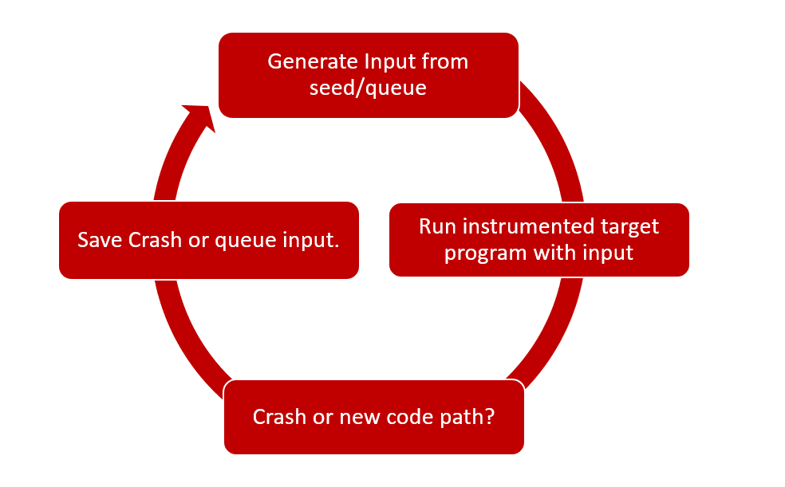
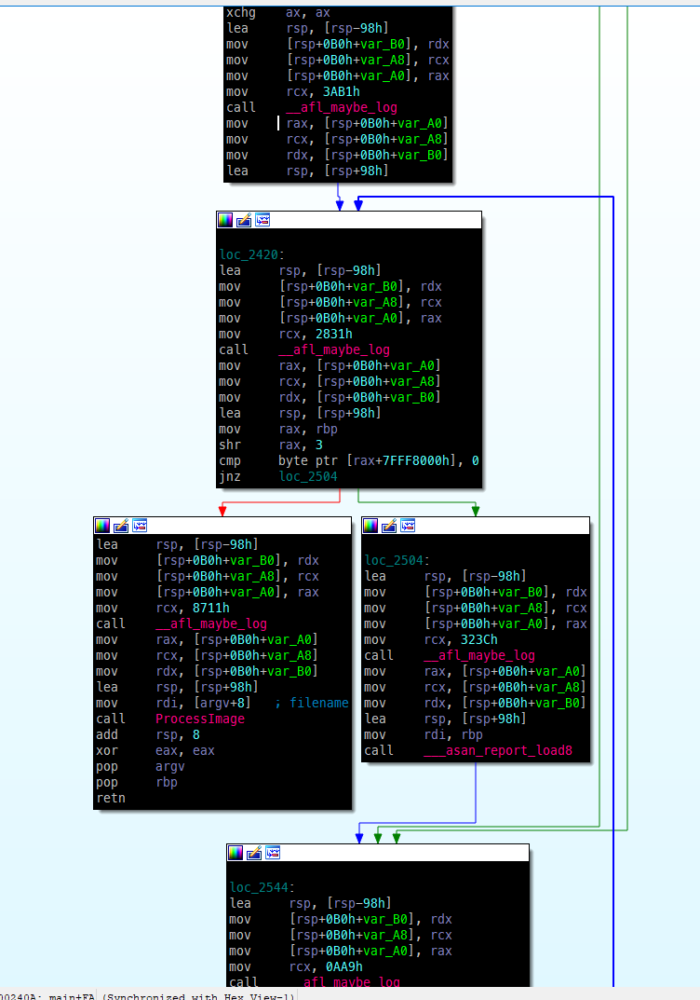
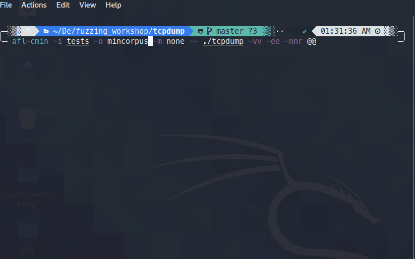

Welcome to RSA Dark Arts Village 2022
This talk is aimed at providing hands on details on how to fuzz open source softwares on linux OS with AFL.
What will be covered
- How does a coverage guided fuzzer works?
- How to install AFL on linux based systems?
- How to fuzz a simple C program using AFL?
- How to fuzz TcpDump using AFL.
- Reporting crashes and bug bounties
- Conclusion
What is needed
- A laptop/desktop with atleast 8gb RAM and 40GB storage.
- Vmware/virtualbox installed.
- Internet connection.
- willingness to learn :)
Training VM Download
Zip File password: infected
user name: kali
password: kali
Current: Principal Researcher @ Sophos, Bangalore, India
Past: Senior Security Researcher @ McAfee, Bangalore,India
Past: Security Researcher @ Symantec, Pune, India

What I do?
- Vulnerability, exploits, malware analysis.
- Fuzzing and bug hunting.
- Have around 30+ CVEs in my name in various closed source and open source software and libraries including windows GDI,libtiff, tcpdump, Jet Database Engine etc.
- MSRC 2018-19 Most Valuable Researcher.
- MSRC Q1 2020 Top Contributing Researcher.
Official Blogs: https://news.sophos.com/en-us/author/hardik-shah/
Past Blogs: https://www.mcafee.com/blogs/author/hardik-shah/
Twitter: @hardik05
Bug Hunting
Problem with the manual approach?
- Manual code audit.
- Takes lot of time. Very slow.
- Not possible to cover all the code paths.
- Large code base, not possible for a single person to do audit.
- Not very productive.
- Things can be missed.
- Can not cover all the scenarios.
Automated
- Automate bug finding. Very fast.
- Can cover most of the code paths.
- No need to worry about size of the code.
- Can be done by an individual.
- Can be automated further to notify about crashes, issues.
Fuzzing
Fuzzing is the process of automated bug finding. A fuzzer will generate or provide crafted input to a program and will monitor its behaviour. if its crashes then test case can be saved to further analysis and reproduction.

Coverage guideded fuzzers
Monitors program execution using compile time or runtime instrumentation and can generate new input files based on the paths taken.
- Mutates file and check for new code path coverage/crash
- New Code path -> Add to Queue
- Crash -> Save the input ☺ 
Example: AFL,Honggfuzz,libfuzzer
Very useful and successful in finding bugs.
Interesting case study:
pulling jpeg out of thin air: https://lcamtuf.blogspot.com/2014/11/pulling-jpegs-out-of-thin-air.html
$ mkdir in_dir
$ echo 'hello' >in_dir/hello
$ ./afl-fuzz -i in_dir -o out_dir ./jpeg-9a/djpeg
Basic blocks, Instrumentation and Code Coverage
1. Basic block
- Consecutive lines of code with no branches. (code before program has to select a path/after taking a new path.)
- Entry point – control comes to this basic block.
- Exit point – control goes to another basic block.
Consider following code:

What it looks like in IDA: 
2. Code Coverage
- Measure of the code covered by an input in a program.
- More code paths covered by an input or set of inputs, more better.
- More code coverage means higher the chances of finding bugs.

3. Instrumentation?
- Compile time instrumentation - Adds instrumentation code at compile time. (used by afl/honggfuzz/libfuzzer when source code is avaialble)

- Can automate things like coverage measurement, Removes manual efforts.
If source code is not available.
- Runtime instrumentation - Used when source code is not available.

- Adds instrumentation code at runtime. (Mostly used on windows, Dynamorio/Pin tools etc.)
What Is AFL?
- American Fuzzy Lop
- Created by Michael Zelwaski
- Fuzzer with instrumentation-guided genetic algorithm.
- Comes with set of utilities: afl-fuzz, afl-cmin, afl-tmin, afl-showmap etc..
- Mutate the files based on various strategies. Bitflip, byteflip, havoc, splice etc.
Fuzzing strategies
AFL uses following fuzzing strategies:
Fuzzing Strategy | Details |
Bit Flip | Flips a bit i.e. 1 becomes 0, 0 becomes 1 - this can be done in steps of 1⁄1,2⁄1,4⁄1,8⁄8 ....32⁄8 (same strategy will be used for byteflip as well) |
Byte Flip | Flips a byte - this can be done in steps of 1⁄1,2⁄1,4⁄1,8⁄8 ....32⁄8 |
Arithmetic | Random arithmetic like addition/substraction of random values |
Havoc | Random strategy - anythings from bit/bytes/interest/splice/addition/subtraction |
Dictionary | User provided dictionary or auto discovered tokens. |
Interest | Replace content in original file with interesting values like: 0xff,0x7f etc – 8⁄8,16⁄8.. |
Splice | Splits and combine two or more files to get a new file. |
Reference:
https://github.com/google/AFL/blob/master/docs/technical_details.txt
Steps involved in the fuzzing:
Corpus Collection
- A good file corpus will help to discover paths in short amount of time.
- Use regression/test case corpus if available for the software/libs.
Example:
- Image file corpus -> https://lcamtuf.coredump.cx/afl/demo/
- Multimedia file corpus -> http://samples.ffmpeg.org/
- Others -> Search github/google
Corpus Mimization
Why do we need to Minimize input corpus?
- Filter out the files which doesn't result in new path.
- Filter out large files.
How?
afl-cmin –i input –o mininput -- ./program @@
Fuzzing the program
- will result in crash or hangs
Crash Triaging and Minimisation
- If multiple crashes then we need to remove duplicates.
- We also need to remove unecessary data from crash files.
Root cause analysis
We found a crash by running fuzzer – now what?
- Which Field in file?
- What Value in the field?
- Which Condition in program? -> =>VULNERABILITY<=
$ git clone https://github.com/google/AFL.git
$ cd AFL
$ make
$ cd llvm_mode
$ make
$ cd ..
$ make install
This will install various compiler wrappers and utilities like:
- afl-gcc,afl-clang,afl-clang-fast - these will be used to instrument and compile C code.
- afl-g++,afl-clang++,afl-clang-fast++ - these will be used to instument and compile C++ code.
- afl-gotcpu - utility to check available CPU cores on the system.
- afl-cmin - utility to minimize corpus files, reduces number of files.
- afl-showmap - shows coverage map.
- afl-tmin - utility to trim a single file and removing other data which is not needed, reduces data in a single file.
you can install it by typing following command:
$ sudo apt install clang llvm
santizers helps in finding bugs at the eary stages of program execution.
There are various types of sanitizers which can be enabled at compile time by passing required options. you need to add following flags at compile time if you want to enable any of the sanitizers below:
1. ASAN (-fsanitize=address)
2. MSAN (-fsanitize=memory)
3. UBSAN (-fsanitize=undefined)
4. TSAN (-fsanitize=thread)

AFL has various environment variables like AFL_HARDEN, AFL_USE_ASAN and AFL_USE_MSAN etc. which can be used to enable support for this sanitizers as well as to do various fuzzing related customization. check here: https://github.com/mirrorer/afl/blob/master/docs/env_variables.txt
Reference:
https://clang.llvm.org/docs/AddressSanitizer.html
https://clang.llvm.org/docs/UndefinedBehaviorSanitizer.html
Goal: learning how to fuzz a program with AFL.
Fuzzing Damn vulnerable C program with AFL
Lets download it first:
$ git clone https://github.com/hardik05/Damn_Vulnerable_C_Program.git
Let's compile it using afl-gcc/afl-clang(when nothing works, use afl-gcc,afl-g++) :
$ afl-gcc -fsanitize=address,undefined -ggdb -O0 imgRead.c -o imgRead_afl
Generate some seed corpus
$ mkdir in
$ echo "IMG" > in/1.img
Fuzz it
$ afl-fuzz -i in -o out -m none -- ./imgRead_afl @@
you should see a screen like below: 
It has various status messages.
not all are needed. you can read more about them here: https://github.com/google/AFL/blob/master/docs/status_screen.txt
- Quick excercise, go to out directory and analyze various files and directory contents.
Get the source code of tcpdump and libpcap.
git clone https://github.com/the-tcpdump-group/tcpdump.git
cd tcpdump
git clone https://github.com/the-tcpdump-group/libpcap.git
cd libpcap
Compile it using AFL
CC=afl-gcc CFLAGS="-g -fsanitize=address -fno-omit-frame-pointer" LDFLAGS="-g -fsanitize=address -fno-omit-frame-pointer" ./configure
sudo make && make install
it will complain about some missing dependencies, run following commands:
sudo apt install flex bison
your compilation should be succssfull.
How to get test corpus?
- Check tests folder ☺
How to minimize it?
use afl-cmin, run following command:
afl-cmin –i tests –o mincorpus –m none -- ./tcpdump –vv –ee –nnr @@
You should see a screenshot something like below: 
Lets, Fuzz it!
afl-fuzz –i mincorpus –o fuzzoutput –m none -- ./tcpdump –vv –ee –nnr @@
you should see something like this:
✅ Always report to vendor first.generally vendor have security@vendor.com email id. you can also check their website for security contact.
✅ Dont disclose anything until vendor releases the patch.
✅ Vendors may reward you with bug bounty for your work!
- Try AFL++ - https://aflplus.plus/ Community driven, active development, lot of inbuild features compared to vaniall AFL. Support multiple architecutre, blackbox binary fuzzing, custom mutators and has good folks to support.
- fuzz various open source software using any of the fuzzer discussed in this workshop.
- Try winafl - https://github.com/googleprojectzero/winafl if you want to fuzz windows binaries.
- Fuzzing can help in finding diffrent types of bugs and help to improve overall quality of software.
- Fuzzing can save time,resources as it can be automated.
- Fuzzing should be part of SDLC.
- Sometimes you get broken and non working stuff but you willl earn alot.
- But in the end its worth it!
- Questions?
My youtube channel on fuzzing: Click here
Twitter: @hardik05
email: hardik05[AT]gmail[DOT]com
Website: fuzzing.in
Thanks everyone, hope you have enjoyed this workshop as much as I have enjoyed delivering it and creating contents and various excericses for it.